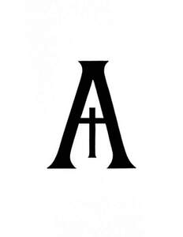

Trade Mark Journal No.2025/031 1 August 2025
UK00004222501 21 June 2025 (5,9,25,32,35,41,43,44)

- Class 5
- Dietary and nutritional supplements; protein supplements; vitamins; mineral supplements; pre-workout and post-workout supplements; health food supplements; meal replacement powders; powdered nutritional supplement drink mixes.
- Class 9
- Mobile applications for gym access and membership management; downloadable software for barcode scanning and entry verification; software for fitness tracking; downloadable mobile applications for nutrition advice, training plans, and customer engagement. .
- Class 25
- Clothing; sportswear; gym wear; hoodies; T-shirts; leggings; shorts; tracksuits; caps; hats; jackets; footwear; socks; branded activewear and fitness apparel. .
- Class 32
- Bottled water; energy drinks; isotonic beverages; non-alcoholic drinks; sports drinks; flavoured water; protein-enriched beverages; functional drinks; hydrogen enriched water.
- Class 35
- Retail and online retail services connected with the sale of dietary and nutritional supplements, gym wear, fitness clothing, beverages, foam rollers, muscle release tools, resistance bands, wrist straps, water bottles; advertising and marketing services; business management for fitness and nutrition brands.
- Class 41
- Gym services; physical fitness training; exercise instruction; personal training services; group fitness classes; fitness education; lifestyle and health coaching; providing fitness facilities; online fitness coaching.
- Class 43
- Café services; coffee bar services; preparation and provision of food and drink; juice bars; smoothie bars; serving beverages and snacks on premises; takeaway food services within fitness facilities. .
- Class 44
- Nutrition consultancy; Nutritional advice; meal planning services; weight management consultancy; personalised nutrition services; physiotherapy and physical rehabilitation services; massage; spa and wellness centre services.
Ascend Ecosystem LTD